Chapter 8 Stochastic Explorations Using MCMC
In this chapter, we will discuss stochastic explorations of the model space using Markov Chain Monte Carlo method. This is particularly usefull when the number of models in the model space is relatively large. We will introduce the idea and the algorithm that we apply on the kid’s cognitive score example. Then We will introduce some alternative priors for the coefficients other than the reference priors that we have been focused on. We will demonstrate using Markov Chain Monte Carlo on the crime data set to see how to use this stochastic method to explore the model space and how different priors may lead to different posterior inclusion probability of coefficients. Finally, we will summarize decision making strategies under Bayesian model uncertainty.
8.1 Stochastic Exploration
In the last chapter, we explored model uncertainty using posterior probability of each model and Bayesian model averaging based on BIC. We applied the idea on the kid’s cognitive score data set. With 4 predictors, we had \(2^4 = 16\) possible models. Since the total number of models is relatively small, it is easy to enumerate all possible models to obtain Bayesian model averaging results. However, in general we often have data sets with large number of variables, which may lead to long computating time via enumeration. In this section, we will present one of the common stochastic methods, Markov Chain Monte Carlo (MCMC), to explore model spaces and implement Bayesian model averaging to estimate quantities of interest.
8.1.1 Markov Chain Monte Carlo Exploration
Let us assume that we have a pseudo population of possible models that we obtained from all the possible combinations of regression models from the kid’s cognitive score example. We prepare the data set as in Section 6.4 and run bas.lm to obtain posterior probability of each model as we did in Section 7.2.
# Data processing
library(foreign)
cognitive = read.dta("http://www.stat.columbia.edu/~gelman/arm/examples/child.iq/kidiq.dta")
cognitive$mom_work = as.numeric(cognitive$mom_work > 1)
cognitive$mom_hs = as.numeric(cognitive$mom_hs > 0)
colnames(cognitive) = c("kid_score", "hs","IQ", "work", "age")
# Run regression
library(BAS)
cog_bas = bas.lm(kid_score ~ hs + IQ + work + age,
prior = "BIC",
modelprior = uniform(),
data = cognitive)We will use this example to explore the idea of MCMC and generalize it to regression models with much larger model spaces. To explore the models, we may arrange them by their model sizes, the number of predictors plus the intercept, on the \(x\)-axis, and their posterior probabilities on the \(y\)-axis.
library(ggplot2)
# Construct data frame for plotting
output = data.frame(model.size = cog_bas$size, model.prob = cog_bas$postprobs)
# Plot model size vs mode posterior probability
ggplot(data = output, aes(x = model.size, y = model.prob)) +
geom_point(color = "blue", pch = 17, size = 3) +
xlab("model size") + ylab("model posterior probability")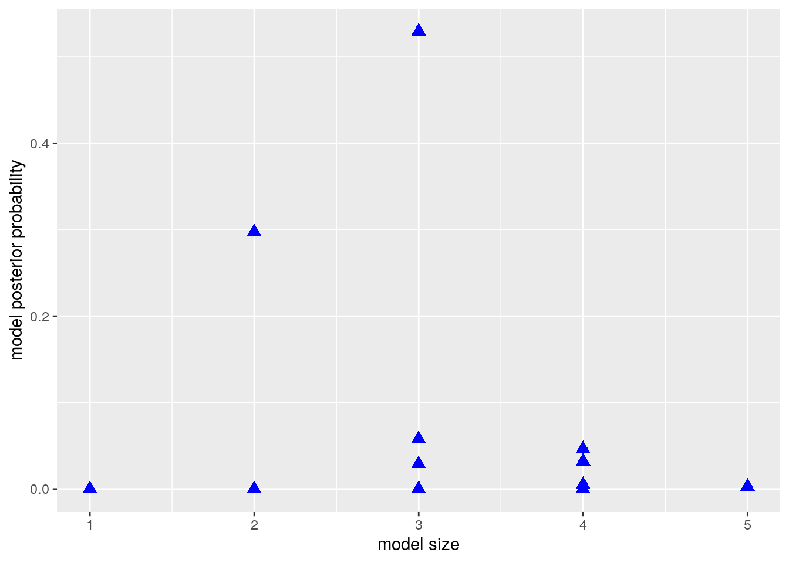
We could then take a sample from this population of models with replacement (therefore, some models may be selected more than once in this sample). This process could be done using the sample function in R. We hope that the frequency of appearance of a model would be a good approximation of the posterior probability of this model. We use \(I(M_j = M_m)\) as the indicator function to indicate that the current model \(M_j\) we sample is the model of interest \(M_m\), that is \[ I(M_j=M_m) = \left\{\begin{array}{ll} 1, & \text{if $M_j = M_m$} \\ 0, & \text{if $M_j\neq M_m$}\end{array}\right. \]
After all, we would not need to calculate the model posterior probability \(P(M_m~|~\text{data})\). The quantity from the sampling \(\displaystyle \sum_{j=1}^J\frac{I(M_j=M_m)}{J}\) would provide a good approximation, which only requires simple counting.
In order to ensure that we would sample models with a probability that is equal to their posterior probability, or in a simpler way, proportional to the marginal likelihood times the prior probability \(p(\text{data}~|~M_m)\times p(M_m)\), we need to design a sampling method that replaces old models with new models when the posterior probability goes up, and keeps the old models when the posterior probability is not improved.
Here, we propose the Metropolis-Hastings algorithm. We start with an initial model \(M^{(0)}\). This could be any model we like in the model space. We start iterating over the entire model space, randomly pick the next model \(M^{*(1)}\) and see whether this model improves the posterior probability. We use the notation \(M^{*(1)}\) instead of \(M^{(1)}\) because we are not sure whether we should include this model in our final sample, or we should consider other models. Therefore, we calculate the ratio between the posterior probability of the two models, the original model \(M^{(0)}\), and the proposed model \(M^{*(1)}\), which turns out to be the posterior odd between the two models \[ R=\frac{p(M^{*(1)}~|~\text{data})}{p(M^{(0)}~|~\text{data})}=\text{PO}[M^{*(1)}:M^{(0)}]. \]
Our goal is to avoid actually calculating the posterior probability of each model, so we instead would compute \(R\) using the Bayes factor and the prior odd of the two models. \[ R=\frac{p(M^{*(1)}~|~\text{data})}{p(M^{(0)}~|~\text{data})}={\textit{PO}}[M^{*(1)}:M^{(0)}]={\textit{BF}}[M^{*(1)}:M^{(0)}]\times {\textit{O}}[M^{*(1)}:M^{(0)}]. \]
If \(R\geq 1\), that means \(M^{*(1)}\) will surely improve the posterior probability after seeing the data compared to \(M^{(0)}\). So we would like to include \(M^{*(1)}\) into our sample, because \(M^{*(1)}\) deserves more occurrence. In this case, we set \(M^{*(1)}\) to be \(M^{(1)}\), indicating that it is part of our final sample. However, if \(R<1\), we are not that sure whether \(M^{*(1)}\) should be in the sample. But we also do not want to only include models with higher posterior probabilities. Remember that the purpose of this algorithm is to reproduce the frequency of model occurance in the final sample so that the relative frequency of occurrence of each model could be a good proxy of its posterior probability. Even though the proposed model \(M^{*(1)}\) has lower posterior probability, we should still have some representatives of this model in our final sample. Hence we set \(M^{*(1)}\) to be \(M^{(1)}\) with probability \(R\), reflecting the chance that this model would be in our sample is \(R\).
To include \(M^{*(1)}\) in the final sample with probability \(R\), we may use a random number generator to generate number between 0 and 1 and see whether this number is larger than \(R\). Or we may set a coin flip with heads showing up with probability \(R\). If the random number is larger than \(R\), or the head shows up using the biased coin, we include this model. Otherwise, we neglect this proposed model and keep on selecting the next model.
Once the first model \(M^*{(1))}\) is sampled, we move onto the second model \(M^{(2)}\) with the same process. In general, after we have obtained model \(M^{(i)}\), we propose a model \(M^{*(i+1)}\) and calculate the ratio of the posterior probabilities of the two models \[ R = \frac{p(M^{*(i+1)}~|~\text{data})}{p(M^{(i)}~|~\text{data})}={\textit{BF}}[M^{*(i+1)}:M^{(i)}]\times {\textit{O}}[M^{*(i+1)}:M^{(i)}].\] If \(R\geq 1\), we unconditionally accept \(M^{*(i+1)}\) to be our next model \(M^{(i)}\). If \(R<1\), we accept \(M^{*(i+1)}\) to be \(M^{(i)}\) with probability \(R\).
After obtaining \(J\) models, \(M^{(1)}, M^{(2)}, \cdots, M^{(J)}\), we can count how many models inside this sample is \(M_m\), the model we are interested. Then we use the formula (8.1) to approximate the posterior probability of \(M_m\). These estimated probabilities can be used in model selection or BMA instead of the exact expressions.
We propose model randomly in the above algorithm, i.e., all models are equally likely to be proposed. This can be pretty inefficient if there are lots of models with low probabilities. We may come up with other ways to propose models. For example, we may look at neighboring models of our current model by either adding one predictor that is currently not in the model, or randomly dropping one of the current predictors from the model. We may flip a fair coin to decide whether to add or to drop. This forms a random walk across neighboring models. We may also propose to swap out a current predictor with one that is currently not in the model, which maintains the size of the model. This has the potential to take bigger jumps in the model space. There are other possible moves that can be designed to help move around over the model space. However, we have to be careful to adjust for any potential bias, due to how we propose new models, to ensure that the relative frequency eventually would converge to the posterior probability. In the lecture video, we have demonstrated the Markov Chain Monte Carlo method on the kid’s cognitive score using animation to show how each model was proposed and finally selected.
8.2 Other Priors for Bayesian Model Uncertainty
So far, we have discussed Bayesian model selection and Bayesian model averaging using BIC. BIC is an asymptotic approximation of the log of marginal likelihood of models when the number of data points is large. Under BIC, prior distribution of \({\boldsymbol{\beta}}= (\beta_0, \beta_1,\cdots, \beta_p)^T\) is uniformaly flat, which is the same as applying the reference prior on \({\boldsymbol{\beta}}\) conditioning on \(\sigma^2\). In this section, we will introduce a new conjugate prior distribution, called the Zellner’s \(g\)-prior. We will see that this prior leads to simple expressions for the Bayes factor, in terms of summary statistics from ordinary least square (OLS). We will talk about choosing the parameter \(g\) in the prior and conduct a sensitivity analysis, using the kid’s cognitive score data that we used in earlier sections.
8.2.1 Zellner’s \(g\)-Prior
To analyze the model more conveniently, we still stick with the “centered” regression model. Let \(y_1,\cdots,y_n\) to be the observations of the response variable \(Y\). The multiple regression model is
\[ y_i = \beta_0 + \beta_1(x_{1,i}-\bar{x}_1) + \beta_2(x_{2, i}-\bar{x}_2)+\cdots +\beta_p(x_{p, i}-\bar{x}_p)+\epsilon_i, \quad 1\leq i\leq n.\]
As before, \(\bar{x}_1, \cdots,\bar{x}_p\), are the sample means of the variables \(X_1,\cdots,X_p\). Since we have centered all the variables, \(\beta_0\) is no longer the \(y\)-intercept. Instead, it is the sample mean of \(Y\) when taking \(X_1=\bar{x}_1,\cdots, X_p=\bar{x}_p\). \(\beta_1,\cdots,\beta_p\) are the coefficients for the \(p\) variables. \({\boldsymbol{\beta}}=(\beta_0,\beta_1,\cdots,\beta_p)^T\) is the vector notation representing all coefficients, including \(\beta_0\).
Under this model, we assume
\[ y_i~|~ {\boldsymbol{\beta}}, \sigma^2~{\mathrel{\mathop{\sim}\limits^{\rm iid}}}~{\textsf{N}}(\beta_0+\beta_1(x_{1,i}-\bar{x}_1)+\cdots+\beta_p(x_{p,i}-\bar{x}_p), \sigma^2), \] which is equivalent to \[ \epsilon_i~|~ {\boldsymbol{\beta}}, \sigma^2 ~{\mathrel{\mathop{\sim}\limits^{\rm iid}}}~{\textsf{N}}(0, \sigma^2). \]
We then specify the prior distributions for \(\beta_j,\ 0\leq j\leq p\). Zellner proposed a simple informative conjugate multivariate normal prior for \({\boldsymbol{\beta}}\) conditioning on \(\sigma^2\) as
\[ {\boldsymbol{\beta}}~|~\sigma^2 ~\sim ~{\textsf{N}}(\boldsymbol{b}_0, \Sigma = g\sigma^2\text{S}_{\bf{xx}}^{-1}). \]
Here \[ \text{S}_{\bf{xx}} = (\mathbf{X}-\bar{\mathbf X})^T(\mathbf X - \bar{\mathbf X}), \]
where the matrix \(\mathbf{X}-\bar{\mathbf X}\) is \[ \mathbf{X}-\bar{\mathbf X} = \left(\begin{array}{cccc} | & | & \cdots & | \\ X_1-\bar{X}_1 & X_2 - \bar{X}_2 & \cdots & X_p-\bar{X}_p \\ | & | & \cdots & | \end{array}\right) = \left(\begin{array}{cccc} x_{1, 1} - \bar{x}_1 & x_{2, 1} - \bar{x}_2 & \cdots & x_{p, 1} - \bar{x}_p \\ \vdots & \vdots & & \vdots \\ x_{1, n} - \bar{x}_1 & x_{2, n} - \bar{x}_2 & \cdots & x_{p, n} - \bar{x}_p \end{array} \right). \]
When \(p=1\), this \(\text{S}_{\bf{xx}}\) simplifies to \(\displaystyle \text{S}_{\text{xx}} = \sum_{i=1}^n(x_{i}-bar{x})^2\), the sum of squares of a single variable \(X\) that we used in Section 6.1. In multiple regression, \(\text{S}_{\bf{xx}}\) provides the variance and covariance for OLS.
The parameter \(g\) scales the prior variance of \({\boldsymbol{\beta}}\), over the OLS variances \(\sigma^2\text{S}_{\bf{xx}}^{-1}\). One of the advantages of using this prior is ,that it reduces prior elicitation down to two components; the prior mean \(\boldsymbol{b}_0\) and the scalar \(g\). We use \(g\) to control the size of the variance of the prior, rather than set separate priors for all the variances and covariances (there would be \(p(p+1)/2\) such priors for a \(p+1\) dimensional multivariate normal distribution).
Another advantage of using Zellner’s \(g\)-prior is that it leads to simple updating rules, like all conjugate priors. Moreover, the posterior mean and posterior variance have simple forms. The posterior mean is \[ \frac{g}{1+g}\hat{{\boldsymbol{\beta}}} + \frac{1}{1+g}\boldsymbol{b}_0, \] where \(\hat{{\boldsymbol{\beta}}}\) is the frequentist OLS estimates of coefficients \({\boldsymbol{\beta}}\). The posterior variance is \[ \frac{g}{1+g}\sigma^2\text{S}_{\bf{xx}}^{-1}. \]
From the posterior mean formula, we can see that the posterior mean is a weighted average of the prior mean \(\boldsymbol{b}_0\) and the OLS estimate \(\hat{{\boldsymbol{\beta}}}\). Since \(\displaystyle \frac{g}{1+g}\) is strictly less than 1, Zellner’s \(g\)-prior shrinks the OLS estimates \(\hat{{\boldsymbol{\beta}}}\) towards the prior mean \(\boldsymbol{b}_0\). As \(g\rightarrow \infty\), \(\displaystyle \frac{g}{1+g}\rightarrow 1\) and \(\displaystyle \frac{1}{1+g}\rightarrow 0\), and we recover the OLS estimate as in the reference prior.
Similarly, the posterior variancc is a shrunken version of the OLS variance, by a factor of \(\displaystyle \frac{g}{1+g}\). The posterior distribution of \({\boldsymbol{\beta}}\) conditioning on \(\sigma^2\) is a normal distribution \[ {\boldsymbol{\beta}}~|~\sigma^2, \text{data}~\sim~ {\textsf{N}}(\frac{g}{1+g}\hat{{\boldsymbol{\beta}}} + \frac{1}{1+g}\boldsymbol{b}_0,\ \frac{g}{1+g}\sigma^2\text{S}_{\bf{xx}}^{-1}). \]
8.2.2 Bayes Factor of Zellner’s \(g\)-Prior
Because of this simplicity, Zellner’s \(g\)-prior has been widely used in Bayesian model selection and Bayesian model averaging. One of the most popular versions uses the \(g\)-prior for all coefficients except the intercept, and takes the prior mean to be the zero vector \(\boldsymbol{b}_0 = \bf{0}\). If we are not testing any hypotheses about the intercept \(\beta_0\), we may combine this \(g\)-prior with the reference prior for the intercept \(\beta_0\) and \(\sigma^2\), that is, we set \[ p(\beta_0, \sigma^2) \propto \frac{1}{\sigma^2}, \] and use the \(g\)-prior for the rest of the coefficients \((\beta_1, \cdots, \beta_p)^T\).
Under this prior, the Bayes factor for comparing model \(M_m\) to the null model \(M_0\), which only has the intercept, is simply \[ {\textit{BF}}[M_m:M_0] = (1+g)^{(n-p_m-1)/2}(1+g(1-R_m^2))^{-(n-1)/2}. \]
Here \(p_m\) is the number of predictors in \(M_m\), \(R_m^2\) is the \(R\)-squared of model \(M_m\).
With the Bayes factor, we can compare any two models using posterior odds. For example, we can compare model \(M_m\) with the null model \(M_0\) by \[ \frac{p(M_m~|~\text{data}, g)}{p(M_0~|~\text{data}, g)} = {\textit{PO}}[M_m:M_0] = {\textit{BF}}[M_m:M_0]\frac{p(M_m)}{p(M_0)}. \]
Now the question is, how do we pick \(g\)? As we see that, the Bayes factor depends on \(g\). If \(g\rightarrow \infty\), \({\textit{BF}}[M_m:M_0]\rightarrow 0\). This provides overwhelming evidence against model \(M_m\), no matter how many predictors we pick for \(M_m\) and the data. This is the Bartlett’s/Jeffrey-Lindley’s paradox.
On the other hand, if we use any arbitrary fixed value of \(g\), and include more and more predictors, the \(R\)-squared \(R_m^2\) will get closer and closer to 1, but the Bayes factor will remain bounded. With \(R_m^2\) getting larger and larger, we would expect the alternative model \(M_m\) would be supported. However, a bounded Bayes factor would not provide overwhelming support for \(M_m\), even in the frequentist approach we are getting better and better fit for the data. This is the information paradox, when the Bayes factor comes to a different conclusion from the frequentist approach due to the boundedness of Bayes factor in the limiting case.
There are some solutions which appear to lead to reasonable results in small and large samples based on empirical results with real data to theory, and provide resolution to these two paradoxes. In the following examples, we let the prior distribution of \(g\) depend on \(n\), the size of the data. Since \(\text{S}_{\bf{xx}}\) is getting larger with larger \(n\), \(g\sigma^2\text{S}_{\bf{xx}}^{-1}\) may get balanced if \(g\) also grows relatively to the size of \(n\).
Unit Information Prior
In the case of the unit information prior, we let \(g=n\). This is the same as saying \(\displaystyle \frac{n}{g}=1\). In this prior, we will only need to specify the prior mean \(\boldsymbol{b}_0\) for the coefficients of the predicor variables \((\beta_1,\cdots,\beta_p)^T\).
Zellner-Siow Cauchly Prior
However, taking \(g=n\) ignores the uncertainty of the choice of \(g\). Since we do not know \(g\) a priori, we may pick a prior so that the expected value of \(\displaystyle \frac{n}{g}=1\). One exmaple is the Zellner-Siow cauchy prior. In this prior, we let \[ \frac{n}{g}~\sim~ {\textsf{Gamma}}(\frac{1}{2}, \frac{1}{2}). \]
Hyper-\(g/n\) Prior
Another example is to set \[ \frac{1}{1+n/g}~\sim~ {\textsf{Beta}}(\frac{a}{2}, \frac{b}{2}), \] with hyperparameters \(a\) and \(b\). Since the Bayes factor under this prior distribution can be expressed in terms of hypergeometric functions, this is called the hyper-\(g/n\) prior.
8.2.3 Kid’s Cognitive Score Example
We apply these priors on the kid’s cognitive score example and compare the posterior probability that each coefficient \(\beta_i,\ i = 1,2,3,4\) to be non-zero. We first read in data and store the size of the data into \(n\). We will use this \(n\) later, when setting priors for \(n/g\).
library(foreign)
cognitive = read.dta("http://www.stat.columbia.edu/~gelman/arm/examples/child.iq/kidiq.dta")
cognitive$mom_work = as.numeric(cognitive$mom_work > 1)
cognitive$mom_hs = as.numeric(cognitive$mom_hs > 0)
colnames(cognitive) = c("kid_score", "hs","IQ", "work", "age")
# Extract size of data set
n = nrow(cognitive)We then fit the full model using different priors. Here we set model prior to be uniform(), meaning each model has equal prior probability.
library(BAS)
# Unit information prior
cog.g = bas.lm(kid_score ~ ., data=cognitive, prior="g-prior",
a=n, modelprior=uniform())
# a is the hyperparameter in this case g=n
# Zellner-Siow prior with Jeffrey's reference prior on sigma^2
cog.ZS = bas.lm(kid_score ~ ., data=cognitive, prior="JZS",
modelprior=uniform())
# Hyper g/n prior
cog.HG = bas.lm(kid_score ~ ., data=cognitive, prior="hyper-g-n",
a=3, modelprior=uniform())
# hyperparameter a=3
# Empirical Bayesian estimation under maximum marginal likelihood
cog.EB = bas.lm(kid_score ~ ., data=cognitive, prior="EB-local",
a=n, modelprior=uniform())
# BIC to approximate reference prior
cog.BIC = bas.lm(kid_score ~ ., data=cognitive, prior="BIC",
modelprior=uniform())
# AIC
cog.AIC = bas.lm(kid_score ~ ., data=cognitive, prior="AIC",
modelprior=uniform())Here cog.g is the model corresponding to the unit information prior \(g=n\). cog.ZS is the model under the Zellner-Siow cauchy prior with Jeffrey’s reference prior on \(\sigma^2\). cog.HG gives the model under the hyper-\(g/n\) prior. cog.EB is the empirical Bayesian estimates which maximizes the marginal likelihood. cog.BIC and cog.AIC are the ones corresponding to using BIC and AIC for marginal likelihood approximation.
In order to compare the posterior inclusion probability (pip) of each coefficient, we group the results \(p(\beta_i\neq 0)\) obtained from the probne0 attribute of each model for later comparison
probne0 = cbind(cog.BIC$probne0, cog.g$probne0, cog.ZS$probne0, cog.HG$probne0,
cog.EB$probne0, cog.AIC$probne0)
colnames(probne0) = c("BIC", "g", "ZS", "HG", "EB", "AIC")
rownames(probne0) = c(cog.BIC$namesx)We can compare the results by printing the matrix probne0 that we just generated. If we want to visualize them to get a clearer idea, we may plot them using bar plots.
library(ggplot2)
# Generate plot for each variable and save in a list
P = list()
for (i in 2:5){
mydata = data.frame(prior = colnames(probne0), posterior = probne0[i, ])
mydata$prior = factor(mydata$prior, levels = colnames(probne0))
p = ggplot(mydata, aes(x = prior, y = posterior)) +
geom_bar(stat = "identity", fill = "blue") + xlab("") +
ylab("") +
ggtitle(cog.g$namesx[i])
P = c(P, list(p))
}
library(cowplot)
do.call(plot_grid, c(P))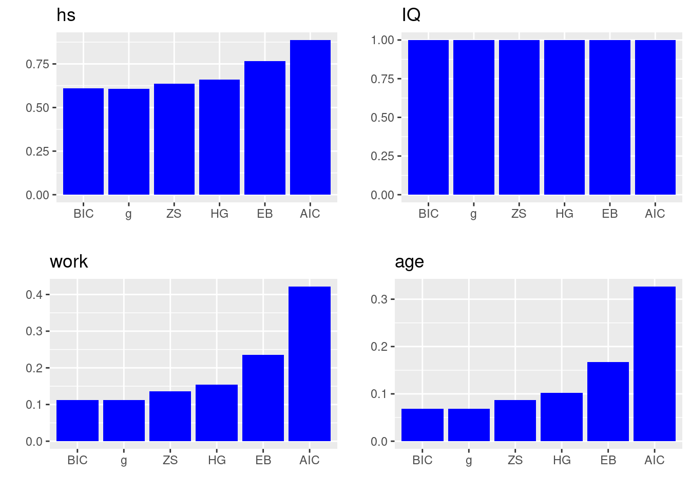 In the plots above, the \(x\)-axis lists all the prior distributions we consider, and the bar heights represent the posterior inclusion probability of each coefficient, i.e., \(p(\beta_i\neq 0)\).
We can see that mother’s IQ score is included almost as probability 1 in all priors. So all methods agree that we should include variable IQ. Mother’s high school status also has probability of more than 0.5 in each prior, suggesting that we may also consider including the variable hs. However, mother’s work status and mother’s age have much lower posterior inclusion probability in all priors. From left to right in each bar plot, we see that method BIC is the most conservative method (meaning it will exclude the most variables), while AIC is being the less conservative method.
8.3 R Demo on BAS Package
In this section, we will apply Bayesian model selection and model averaging on the US crime data set UScrime using the BAS package. We will introduce some additional diagnostic plots, and talk about the effect of multicollinearity in model uncertainty.
8.3.1 The UScrime Data Set and Data Processing
We will demo the BAS commands using the US crime data set in the R libarry MASS.
# Load library and data set
library(MASS)
data(UScrime)This data set contains data on 47 states of the US for the year of 1960. The response variable \(Y\) is the rate of crimes in a particular category per head of population of each state. There are 15 potential explanatory variables with values for each of the 47 states related to crime and other demographics. Here is the table of all the potential explanatory variables and their descriptions.
| Variable | Description |
|---|---|
M |
Percentage of males aged 14-24 |
So |
Indicator variable for southern states |
Ed |
Mean years of schooling |
Po1 |
Police expenditure in 1960 |
Po2 |
Police expenditure in 1959 |
LF |
Labour force participation rate |
M.F |
Number of males per 1000 females |
Pop |
State population |
NW |
Number of non-whites per 1000 people |
U1 |
Unemployment rate of urban males aged 14-24 |
U2 |
Unemployment rate of urban males aged 35-39 |
GDP |
Gross domestic product per head |
Ineq |
Income inequality |
Prob |
Probability of imprisonment |
Time |
Average time served in state prisons |
We may use the summary function to describe each variable in the data set.
summary(UScrime)## M So Ed Po1
## Min. :119.0 Min. :0.0000 Min. : 87.0 Min. : 45.0
## 1st Qu.:130.0 1st Qu.:0.0000 1st Qu.: 97.5 1st Qu.: 62.5
## Median :136.0 Median :0.0000 Median :108.0 Median : 78.0
## Mean :138.6 Mean :0.3404 Mean :105.6 Mean : 85.0
## 3rd Qu.:146.0 3rd Qu.:1.0000 3rd Qu.:114.5 3rd Qu.:104.5
## Max. :177.0 Max. :1.0000 Max. :122.0 Max. :166.0
## Po2 LF M.F Pop
## Min. : 41.00 Min. :480.0 Min. : 934.0 Min. : 3.00
## 1st Qu.: 58.50 1st Qu.:530.5 1st Qu.: 964.5 1st Qu.: 10.00
## Median : 73.00 Median :560.0 Median : 977.0 Median : 25.00
## Mean : 80.23 Mean :561.2 Mean : 983.0 Mean : 36.62
## 3rd Qu.: 97.00 3rd Qu.:593.0 3rd Qu.: 992.0 3rd Qu.: 41.50
## Max. :157.00 Max. :641.0 Max. :1071.0 Max. :168.00
## NW U1 U2 GDP
## Min. : 2.0 Min. : 70.00 Min. :20.00 Min. :288.0
## 1st Qu.: 24.0 1st Qu.: 80.50 1st Qu.:27.50 1st Qu.:459.5
## Median : 76.0 Median : 92.00 Median :34.00 Median :537.0
## Mean :101.1 Mean : 95.47 Mean :33.98 Mean :525.4
## 3rd Qu.:132.5 3rd Qu.:104.00 3rd Qu.:38.50 3rd Qu.:591.5
## Max. :423.0 Max. :142.00 Max. :58.00 Max. :689.0
## Ineq Prob Time y
## Min. :126.0 Min. :0.00690 Min. :12.20 Min. : 342.0
## 1st Qu.:165.5 1st Qu.:0.03270 1st Qu.:21.60 1st Qu.: 658.5
## Median :176.0 Median :0.04210 Median :25.80 Median : 831.0
## Mean :194.0 Mean :0.04709 Mean :26.60 Mean : 905.1
## 3rd Qu.:227.5 3rd Qu.:0.05445 3rd Qu.:30.45 3rd Qu.:1057.5
## Max. :276.0 Max. :0.11980 Max. :44.00 Max. :1993.0However, these variables have been pre-processed for modeling purpose, so the summary statistics may not be so meaningful. The values of all these variables have been aggregated over each state, so this is a case of ecological regression. We will not model directly the rate for a person to commit a crime. Instead, we will use the total number of crimes and average values of predictors at the state level to predict the total crime rate of each state.
We transform the variables using the natural log function, except the indicator variable So (2nd column of the data set). We perform this transformation based on the analysis of this data set.7 Notice that So is already a numeric variable (1 indicating Southern state and 0 otherwise), not as a categorical variable. Hence we do not need any data processing of this variable, unlike mother’s high school status hs and mother’s work status work in the kid’s cognitive score data set.
UScrime[,-2] = log(UScrime[,-2])8.3.2 Bayesian Models and Diagnostics
We run bas.lm function from the BAS package. We first run the full model and use this information for later decision on what variables to include. Here we have 15 potential predictors. The total number of models is\(\ 2^{15} = 32768\). This is not a very large number and BAS can enumerate all the models pretty quickly. However, we want to illustrate how to explore models using stochastic methods. Hence we set argument method = MCMC inside the bas.lm function. We also use the Zellner-Siow cauchy prior for the prior distributions of the coefficients in this regression.
library(BAS)
crime.ZS = bas.lm(y ~ ., data=UScrime,
prior="ZS-null", modelprior=uniform(), method = "MCMC") BAS will run the MCMC sampler until the number of unique models in the sample exceeds \(\text{number of models} = 2^{p}\) (when \(p < 19\)) or until the number of MCMC iterations exceeds \(2\times\text{number of models}\) by default, whichever is smaller. Here \(p\) is the number of predictors.
Diagnostic Plots
To analyze the result, we first look at the diagnostic plot using diagnostics function and see whether we have run the MCMC exploration long enough so that the posterior inclusion probability (pip) has converged.
diagnostics(crime.ZS, type="pip", col = "blue", pch = 16, cex = 1.5)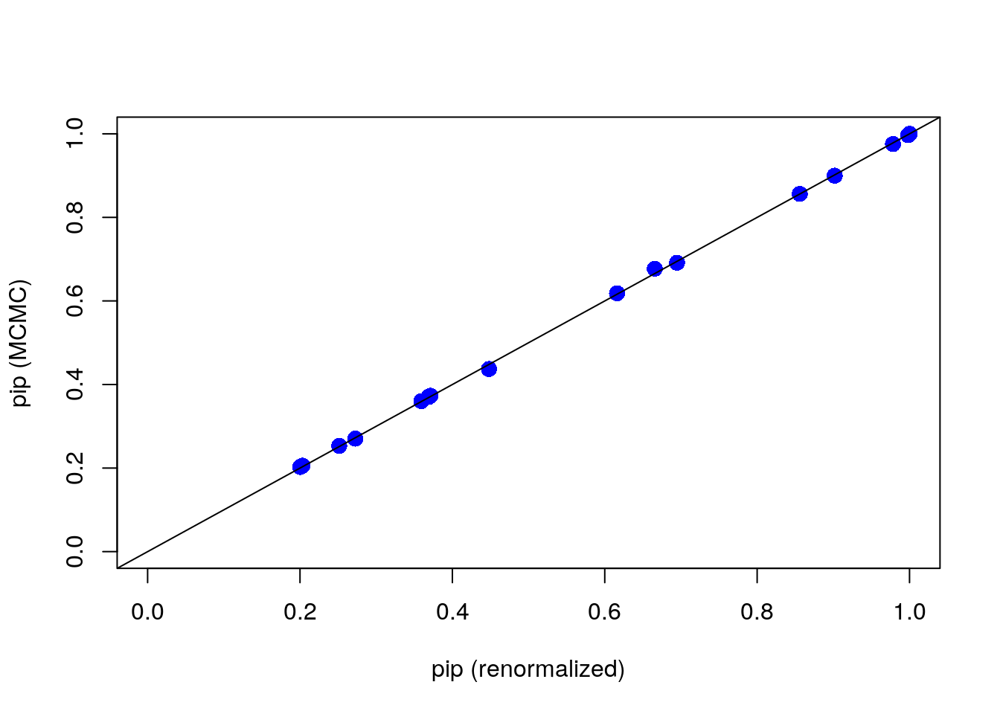
In this plot, the \(x\)-axis is the renormalized posterior inclusion probability (pip) of each coefficient \(\beta_i,\ i=1,\cdots, 15\) in this model. This can be calculated as \[\begin{equation} p(\beta_i\neq 0~|~\text{data}) = \sum_{M_m\in\text{ model space}}I(X_i\in M_m)\left(\frac{\BF[M_m:M_0]\Odd[M_m:M_0]}{\displaystyle \sum_{M_j}\BF[M_j:M_0]\Odd[M_j:M_0]}\right). \tag{8.2} \end{equation}\] Here, \(X_i\) is the \(i\)th predictor variable, and \(I(X_i\in M_m)\) is the indicator function which is 1 if \(X_i\) is included in model \(M_m\) and 0 if \(X_i\) is not included. The first \(\Sigma\) notation indicates that we sum over all models \(M_m\) in the model space. And we use \[\begin{equation} \frac{\BF[M_m:M_0]\Odd[M_m:M_0]}{\displaystyle \sum_{M_j}\BF[M_j:M_0]\Odd[M_j:M_0]} \tag{8.3} \end{equation}\]as the weights. You may recognize that the numerator of (8.3) is exactly the ratio of the posterior probability of model \(M_m\) over the posterior probability of the null model \(M_0\), i.e., the posterier odd \({\textit{PO}}[M_m:M_0]\). We devide the posterior odd by the total sum of posterior odds of all models in the model space, to make sure these weights are between 0 and 1. The weight in Equation (8.3) represents the posterior probability of the model \(M_m\) after seeing the data \(p(M_m~|~\text{data})\), the one we used in Section 7.2. So Equation (8.2) is the theoretical calculation of pip, which can be rewrited as \[ p(\beta_i\neq 0~|~\text{data}) = \sum_{M_m\in \text{ model space}}I(X_i\in M_m)p(M_m~|~\text{data}). \] The null model \(M_0\), as we recall, is the model that only includes the intercept.
On the \(y\)-axis of the plot, we lay out the posterior inclusion probability of coefficient \(\beta_i\), which is calculated using \[ p(\beta_i\neq 0~|~\text{data}) = \frac{1}{J}\sum_{j=1}^J I(X_i\in M^{(j)}).\] Here \(J\) is the total number of models that we sample using MCMC; each model is denoted as \(M^{(j)}\) (some models may repeat themselves in the sample). We count the frequency of variable \(X_i\) occuring in model \(M^{(j)}\), and divide this number by the total number of models \(J\). This is a frequentist approach to approximate the posterior probability of including \(X_i\) after seeing the data.
When all points are on the 45 degree diagonal, we say that the posterior inclusion probability of each variable from MCMC have converged well enough to the theoretical posterior inclusion probability.
We can also use diagnostics function to see whether the model posterior probability has converged:
diagnostics(crime.ZS, type = "model", col = "blue", pch = 16, cex = 1.5)
We can see that some of the points still fall slightly away from the 45 degree diagonal line. This may suggest we should increase the number of MCMC iterations. We may do that by imposing the argument on MCMC.iterations inside the bas.lm function
# Re-run regression using larger number of MCMC iterations
crime.ZS = bas.lm(y ~ ., data = UScrime,
prior = "ZS-null", modelprior = uniform(),
method = "MCMC", MCMC.iterations = 10 ^ 6)
# Plot diagnostics again
diagnostics(crime.ZS, type = "model", col = "blue", pch = 16, cex = 1.5)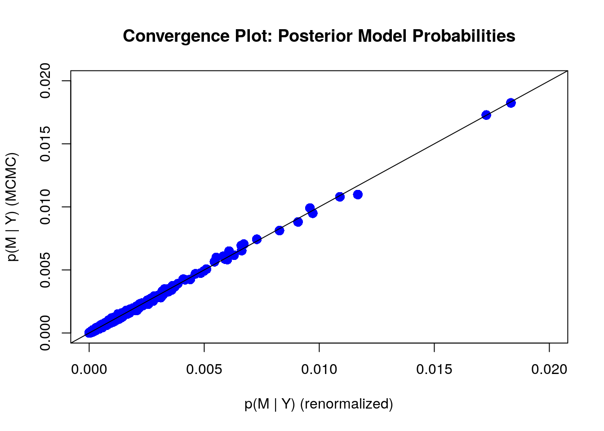
With more number of iterations, we see that most points stay in the 45 degree diagonal line, meaing the posterior inclusion probability from the MCMC method has mostly converged to the theoretical posterior inclusion probability.
We will next look at four other plots of the BAS object, crime.ZS.
Residuals Versus Fitted Values Using BMA
The first plot is the residuals over the fitted value under Bayesian model averaging results.
plot(crime.ZS, which = 1, add.smooth = F,
ask = F, pch = 16, sub.caption="", caption="")
abline(a = 0, b = 0, col = "darkgrey", lwd = 2)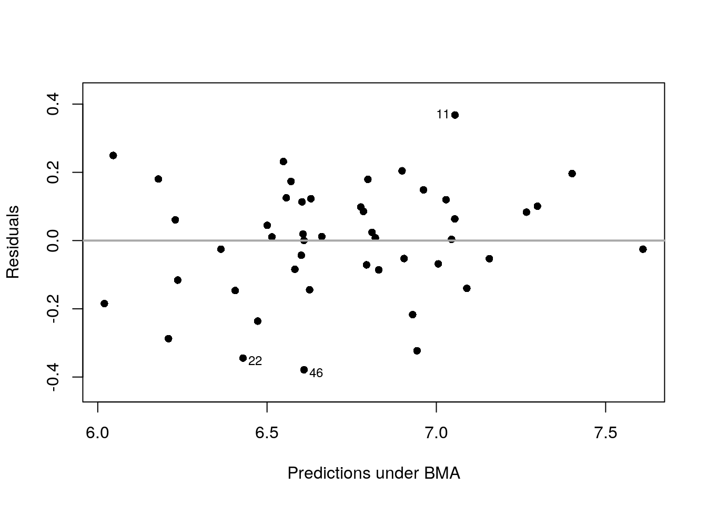
We can see that the residuals lie around the dash line \(y=0\), and has a constant variance. Observations 11, 22, and 46 may be the potential outliers, which are indicated in the plot.
Cumulative Sampled Probability
The second plot shows the cumulative sampled model probability.
plot(crime.ZS, which=2, add.smooth = F, sub.caption="", caption="")
We can see that after we have discovered about 5,000 unique models with MCMC sampling, the probability is starting to level off, indicating that these additional models have very small probability and do not contribute substantially to the posterior distribution. These probabilities are proportional to the product of marginal likelihoods of models and priors, \(p(\text{data}~|~M_m)p(M_m)\), rather than Monte Carlo frequencies.
Model Complexity
The third plot is the model size versus the natural log of the marginal likelihood, or the Bayes factor, to compare each model to the null model.
plot(crime.ZS, which=3, ask=F, caption="", sub.caption="")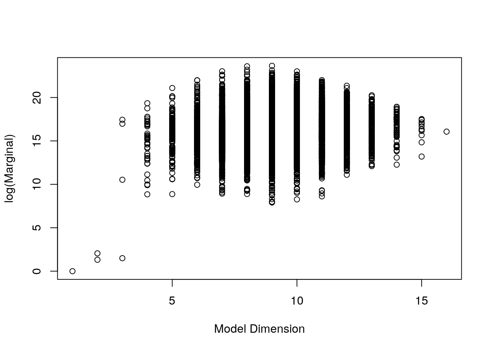
We see that the models with the highest Bayes factors or logs of marginal likelihoods have around 8 or 9 predictors. The null model has a log of marginal likelihood of 0, or a Bayes factor of 1.
Marginal Inclusion Probability
Finally, we have a plot showing the importance of different predictors.
plot(crime.ZS, which = 4, ask = F, caption = "", sub.caption = "",
col.in = "blue", col.ex = "darkgrey", lwd = 3)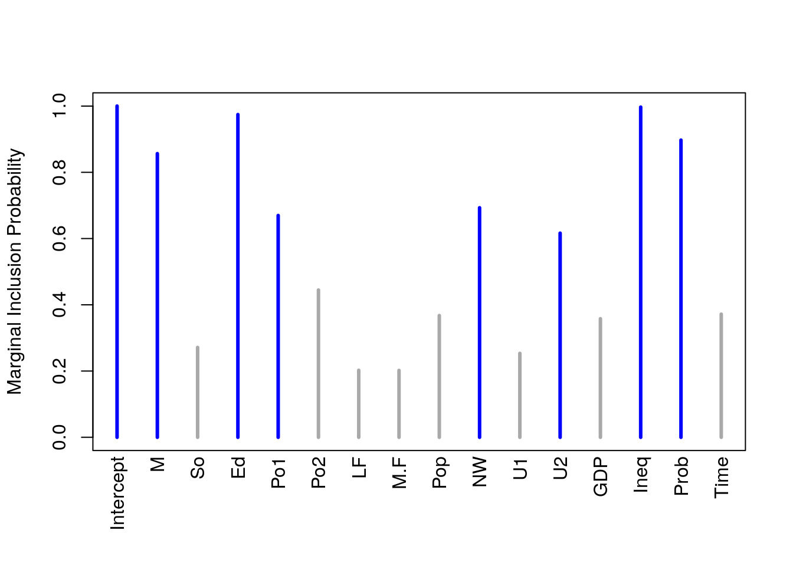
The lines in blue correspond to the variables where the marginal posterior inclusion probability (pip), is greater than 0.5, suggesting that these variables are important for prediction. The variables represented in grey lines have posterior inclusion probability less than 0.5. Small posterior inclusion probability may arise when two or more variables are highly correlated, similar to large \(p\)-values with multicollinearity. So we should be cautious to use these posterior inclusion probabilities to eliminate variables.
Model Space Visualization
To focus on the high posterior probability models, we can look at the image of the model space.
image(crime.ZS, rotate = F)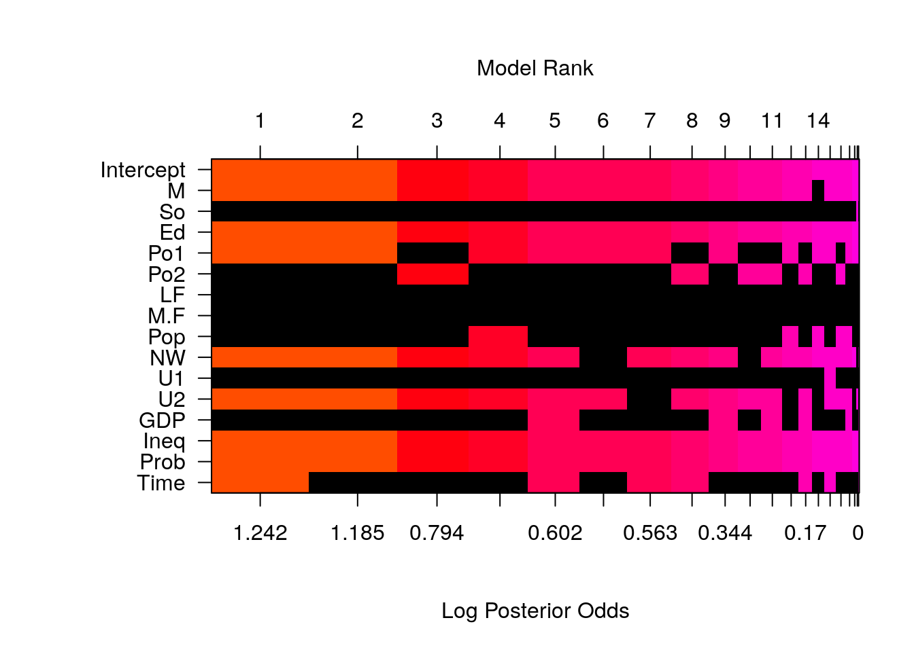
By default, we only include the top 20 models. An interesting feature of this plot is, that whenever Po1, the police expenditures in 1960, is included, Po2, the police expenditures in 1959, will be excluded from the model, and vice versa.
out = cor(UScrime$Po1, UScrime$Po2)
out ## [1] 0.9933688Calculating the correlation between the two variables, we see that that Po1 and Po2 are highly correlated with positive correlation 0.993.
8.3.3 Posterior Uncertainty in Coefficients
Due to the interesting inclusion relationship between Po1 and Po2 in the top 20 models, we extract the two coefficients under Bayesian model averaging and take a look at the plots for the coefficients for Po1 and Po2.
# Extract coefficients
coef.ZS=coef(crime.ZS)
# Po1 and Po2 are in the 5th and 6th columns in UScrime
par(mfrow = c(1,2))
plot(coef.ZS, subset = c(5:6),
col.lab = "darkgrey", col.axis = "darkgrey", col = "darkgrey", ask = F)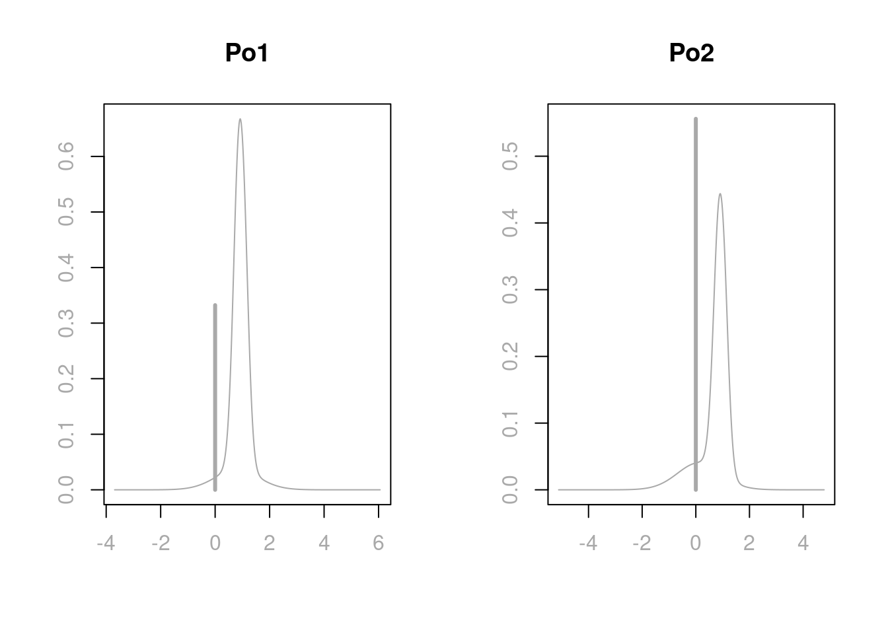
Under Bayesian model averaging, there is more mass at 0 for Po2 than Po1, giving more posterior inclusion probability for Po1. This is also the reason why in the marginal posterior plot of variable importance, Po1 has a blue line while Po2 has a grey line. When Po1 is excluded, the distributions of other coefficients in the model, except the one for Po2, will have similar distributions as when both Po1 and Po2 are in the model. However, when both predictors are included, the adjusted coefficient for Po2 has more support on negative values, since we are over compensating for having both variables included in the model. In extreme cases of correlations, one may find that the coefficient plot is multimodal. If this is the case, the posterior mean may not be in the highest probability density credible interval, and this mean is not necessarily an informative summary. We will discuss more in the next section about making decisions on highly correlated variables.
We can read the credible intervals of each variable using the confint function on the coefficient object coef.ZS of the model. Here we round the results in 4 decimal places.
round(confint(coef.ZS), 4)## 2.5% 97.5% beta
## Intercept 6.6694 6.7825 6.7249
## M 0.0000 2.1636 1.1473
## So -0.0484 0.3065 0.0359
## Ed 0.6811 3.2413 1.8592
## Po1 -0.0014 1.4405 0.5983
## Po2 -0.2591 1.4192 0.3211
## LF -0.5245 1.0023 0.0610
## M.F -2.1792 1.8301 -0.0253
## Pop -0.1215 0.0058 -0.0223
## NW 0.0000 0.1682 0.0663
## U1 -0.5208 0.3549 -0.0253
## U2 -0.0033 0.6642 0.2087
## GDP -0.0680 1.1735 0.2056
## Ineq 0.7144 2.1550 1.3894
## Prob -0.4090 0.0000 -0.2151
## Time -0.5063 0.0621 -0.0843
## attr(,"Probability")
## [1] 0.95
## attr(,"class")
## [1] "confint.bas"8.3.4 Prediction
We can use the usual predict function that we used for lm objects to obtain prediction from the BAS object crime.ZS. However, since we have different models to choose from under the Bayesian framework, we need to first specify which particular model we use to obtain the prediction. For example, if we would like to use the Bayesian model averaging results for coefficients to obtain predictions, we would specify the estimator argument in the predict function like the following
crime.BMA = predict(crime.ZS, estimator = "BMA", se.fit = TRUE)The fitted values can be obtained using the fit attribute of crime.BMA. We have transposed the fitted values into a vector to better present all the values.
fitted = crime.BMA$fit
as.vector(fitted)## [1] 6.661861 7.298648 6.179097 7.611023 7.053774 6.513657 6.784253
## [8] 7.266491 6.629455 6.601210 7.054772 6.570545 6.472258 6.582261
## [15] 6.557598 6.904930 6.229812 6.809760 6.943786 6.962314 6.608882
## [22] 6.428924 6.898285 6.776967 6.405229 7.400980 6.019797 7.156067
## [29] 7.089433 6.500365 6.208967 6.605974 6.798156 6.820174 6.625316
## [36] 7.029165 6.794481 6.362891 6.602975 7.044961 6.547865 6.047033
## [43] 6.929919 7.006459 6.236057 6.608345 6.830830We may use these fitted values for further error calculations. We will talk about decision making on models and how to obtain predictions under different models in the next section.
8.4 Decision Making Under Model Uncertainty
We are closing this chapter by presenting the last topic, decision making under model uncertainty. We have seen that under the Bayesian framework, we can use different prior distributions for coefficients, different model priors for models, and we can even use stochastic exploration methods for complex model selections. After selecting these coefficient priors and model priors, we can obtain the marginal posterior inclusion probability for each variable in the full model, which may provide some information about whether or not to include a particular variable in the model for further model analysis and predictions. With all the information presented in the results, which model would be the most appropriate model?
In this section, we will talk about different methods for selecting models and decision making for posterior distributions and predictions. We will illustrate this process using the US crime data UScrime as an example and process it using the BAS package.
We first prepare the data as in the last section and run bas.lm on the full model
library(MASS)
data(UScrime)
# take the natural log transform on the variables except the 2nd column `So`
UScrime[, -2] = log(UScrime[, -2])
# run Bayesian linear regression
library(BAS)
crime.ZS = bas.lm(y ~ ., data = UScrime,
prior = "ZS-null", modelprior = uniform()) 8.4.1 Model Choice
For Bayesian model choice, we start with the full model, which includes all the predictors. The uncertainty of selecting variables, or model uncertainty that we have been discussing, arises when we believe that some of the explanatory variables may be unrelated to the response variable. This corresponds to setting a regression coefficient \(\beta_j\) to be exactly zero. We specify prior distributions that reflect our uncertainty about the importance of variables. We then update the model based on the data we obtained, resulting in posterior distributions over all models and the coefficients and variances within each model.
Now the question has become, how to select a single model from the posterior distribution and use it for furture inference? What are the objectives from inference?
BMA Model
We do have a single model, the one that is obtained by averaging all models using their posterior probabilities, the Bayesian model averaging model, or BMA. This is referred to as a hierarchical model and it is composed of many simpler models as building blocks. This represents the full posterior uncertainty after seeing the data.
We can obtain the posterior predictive mean by using the weighted average of all of the predictions from each sub model
\[\hat{\mu} = E[\hat{Y}~|~\text{data}] = \sum_{M_m \in \text{ model space}}\hat{Y}\times p(M_m~|~\text{data}).\] This prediction is the best under the squared error loss \(L_2\). From BAS, we can obtain predictions and fitted values using the usual predict and fitted functions. To specify which model we use for these results, we need to include argument estimator.
crime.BMA = predict(crime.ZS, estimator = "BMA")
mu_hat = fitted(crime.ZS, estimator = "BMA")crime.BMA, the object obtained by the predict function, has additional slots storing results from the BMA model.
names(crime.BMA)## [1] "fit" "Ybma" "Ypred" "postprobs" "se.fit"
## [6] "se.pred" "se.bma.fit" "se.bma.pred" "df" "best"
## [11] "bestmodel" "estimator"Plotting the two sets of fitted values, one obtained from the fitted function, another obtained from the fit attribute of the predict object crime.BMA, we see that they are in perfect agreement.
# Load library and prepare data frame
library(ggplot2)
output = data.frame(mu_hat = mu_hat, fitted = crime.BMA$fit)
# Plot result from `fitted` function and result from `fit` attribute
ggplot(data = output, aes(x = mu_hat, y = fitted)) +
geom_point(pch = 16, color = "blue", size = 3) +
geom_abline(intercept = 0, slope = 1) +
xlab(expression(hat(mu[i]))) + ylab(expression(hat(Y[i])))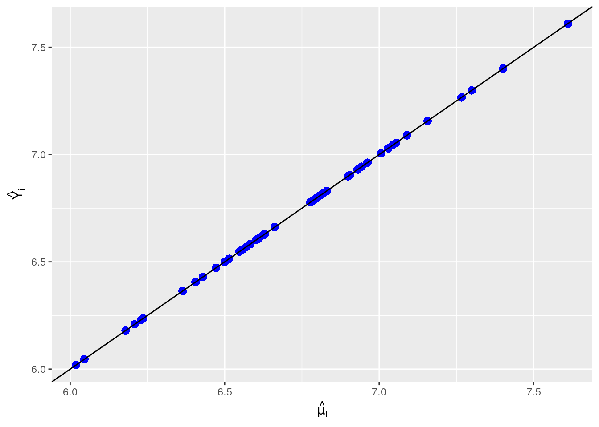
Highest Probability Model
If our objective is to learn what is the most likely model to have generated the data using a 0-1 loss \(L_0\), then the highest probability model (HPM) is optimal.
crime.HPM = predict(crime.ZS, estimator = "HPM")The variables selected from this model can be obtained using the bestmodel attribute from the crime.HPM object. We can print out their names combining bestmodel in crime.HPM and namesx in crime.ZS
crime.ZS$namesx[crime.HPM$bestmodel +1]## [1] "Intercept" "M" "Ed" "Po1" "NW" "U2"
## [7] "Ineq" "Prob" "Time"We see that, except the intercept, which is always in any models, the highest probability model also includes M, percentage of males aged 14-24; Ed, mean years of schooling; Po1, police expenditures in 1960; NW, number of non-whites per 1000 people; U2, unemployment rate of urban males aged 35-39; Ineq, income inequlity; Prob, probability of imprisonment, and Time, average time in state prison.
To obtain the coefficients and their posterior means and posterior standard deviations, we can extract the model by using the best attribute of crime.HPM object.
# Obtain coefficients of all models
coef.crime.ZS = coef(crime.ZS)
# Select coefficients of HPM
# Posterior means of coefficients
coef.crime.ZS$conditionalmeans[crime.HPM$best, ]## Intercept M So Ed Po1
## 6.724936198 1.180596865 0.254151546 0.596200103 0.000000000
## Po2 LF M.F Pop NW
## 0.996967388 1.074548188 0.000000000 -0.002458631 0.000000000
## U1 U2 GDP Ineq Prob
## 0.000000000 0.000000000 -0.170040303 0.000000000 0.000000000
## Time
## 0.158766245# Posterior standard deviation of coefficients
coef.crime.ZS$conditionalsd[crime.HPM$best, ]## Intercept M So Ed Po1 Po2
## 0.04071570 0.67203289 0.13641189 0.74245125 0.00000000 0.22481848
## LF M.F Pop NW U1 U2
## 0.72541627 0.00000000 0.05474782 0.00000000 0.00000000 0.00000000
## GDP Ineq Prob Time
## 0.48836464 0.00000000 0.00000000 0.18453003We can also obtain the posterior probability of this model using
postprob.HPM = crime.ZS$postprobs[crime.HPM$best]
postprob.HPM## [1] 0.01824728we see that this highest probability model has posterior probability of only 0.018. There are many models that have comparable posterior probabilities. So even this model has the highest posterior probability, we are still pretty unsure about whether it is the best model.
Median Probability Model
Another model that is frequently reported, is the median probability model (MPM). This model includes all predictors whose marginal posterior inclusion probabilities are greater than 0.5. If the variables are all uncorrelated, this will be the same as the highest posterior probability model. For a sequence of nested models such as polynomial regression with increasing powers, the median probability model is the best single model for prediction.
However, since in the US crime example, Po1 and Po2 are highly correlated, we see that the variables included in MPM are slightly different than the variables included in HPM.
crime.MPM = predict(crime.ZS, estimator = "MPM")
crime.ZS$namesx[crime.MPM$bestmodel +1]## [1] "Intercept" "M" "Ed" "Po1" "NW" "U2"
## [7] "Ineq" "Prob"As we see, this model only includes 7 variables, M, Ed, Po1, NW, U2, Ineq, and Prob. It does not include Time variable as in HPM.
When there are correlated predictors in non-nexted models, MPM in general does well. However, if the correlations among variables increase, MPM may miss important variables as the correlations tend to dilute the posterior inclusing probabilities of related variables.
To obtain the coefficients in the median probability model, we need to redo bas.lm to specify in bestmodel argument that we would like to keep only the variables with posterior inclusion probabilities greater than 0.5, and we would only want to have 1 model by setting n.models = 1. In this way, we will force other low probability variables not to show up in the model, and we will re-calculate the posterior means and standard deviations for the variables that are included in MPM.
# Re-run regression and specify `bestmodel` and `n.models`
crime.ZS.MPM = bas.lm(y ~ ., data = UScrime,
prior = "ZS-null", modelprior = uniform(),
bestmodel = crime.ZS$probne0 > 0.5, n.models = 1)
# Obtain coefficients of MPM
coef(crime.ZS.MPM)##
## Marginal Posterior Summaries of Coefficients:
##
## Using BMA
##
## Based on the top 1 models
## post mean post SD post p(B != 0)
## Intercept 6.72494 0.02713 1.00000
## M 1.46180 0.43727 1.00000
## So 0.00000 0.00000 0.00000
## Ed 2.30642 0.43727 1.00000
## Po1 0.87886 0.16204 1.00000
## Po2 0.00000 0.00000 0.00000
## LF 0.00000 0.00000 0.00000
## M.F 0.00000 0.00000 0.00000
## Pop 0.00000 0.00000 0.00000
## NW 0.08162 0.03743 1.00000
## U1 0.00000 0.00000 0.00000
## U2 0.31053 0.12816 1.00000
## GDP 0.00000 0.00000 0.00000
## Ineq 1.18815 0.28710 1.00000
## Prob -0.18401 0.06466 1.00000
## Time 0.00000 0.00000 0.00000Best Predictive Model
If our objective is prediction from a single model, the best choice is to find the model whose predictions are closet to those given by BMA. “Closest” could be based on squared error loss for predictions, or be based on any other loss functions. Unfortunately, there is no nice expression for this model. However, we can still calculate the loss for each of our sampled models to try to identify this best predictive model, or BPM.
Using the squared error loss, we find that the best predictive model is the one whose predictions are closest to BMA.
crime.BPM = predict(crime.ZS, estimator = "BPM")
crime.ZS$namesx[crime.BPM$bestmodel + 1]## [1] "Intercept" "M" "So" "Ed" "Po1"
## [6] "Po2" "M.F" "NW" "U2" "Ineq"
## [11] "Prob"The best predictive model includes not only the 7 variables that MPM includes, but also M.F, number of males per 1000 females, and Po2, the police expenditures in 1959.
Using the se.fit = TRUE option with predict we can calculate standard deviations for the predictions or for the mean. Then we can use this as input for the confint function for the prediction object. Here we only show the results of the first 20 data points.
crime.BPM = predict(crime.ZS, estimator = "BPM", se.fit = TRUE)
crime.BPM.conf.fit = confint(crime.BPM, parm = "mean")
crime.BPM.conf.pred = confint(crime.BPM, parm = "pred")
cbind(crime.BPM$fit, crime.BPM.conf.fit, crime.BPM.conf.pred)
## 2.5% 97.5% mean 2.5% 97.5% pred
## [1,] 6.668988 6.513238 6.824738 6.668988 6.258715 7.079261 6.668988
## [2,] 7.290854 7.151787 7.429921 7.290854 6.886619 7.695089 7.290854
## [3,] 6.202166 6.039978 6.364354 6.202166 5.789406 6.614926 6.202166
## [4,] 7.661307 7.490608 7.832006 7.661307 7.245129 8.077484 7.661307
## [5,] 7.015570 6.847647 7.183493 7.015570 6.600523 7.430617 7.015570
## [6,] 6.469547 6.279276 6.659818 6.469547 6.044966 6.894128 6.469547
## [7,] 6.776133 6.555130 6.997135 6.776133 6.336920 7.215346 6.776133
## [8,] 7.299560 7.117166 7.481955 7.299560 6.878450 7.720670 7.299560
## [9,] 6.614927 6.482384 6.747470 6.614927 6.212890 7.016964 6.614927
## [10,] 6.596912 6.468988 6.724836 6.596912 6.196374 6.997449 6.596912
## [11,] 7.032834 6.877582 7.188087 7.032834 6.622750 7.442918 7.032834
## [12,] 6.581822 6.462326 6.701317 6.581822 6.183896 6.979748 6.581822
## [13,] 6.467921 6.281998 6.653843 6.467921 6.045271 6.890571 6.467921
## [14,] 6.566239 6.403813 6.728664 6.566239 6.153385 6.979092 6.566239
## [15,] 6.550129 6.388987 6.711270 6.550129 6.137779 6.962479 6.550129
## [16,] 6.888592 6.746097 7.031087 6.888592 6.483166 7.294019 6.888592
## [17,] 6.252735 6.063944 6.441526 6.252735 5.828815 6.676654 6.252735
## [18,] 6.795764 6.564634 7.026895 6.795764 6.351369 7.240160 6.795764
## [19,] 6.945687 6.766289 7.125086 6.945687 6.525866 7.365508 6.945687
## [20,] 7.000331 6.840374 7.160289 7.000331 6.588442 7.412220 7.000331
## [...]We can use similar method as in HPM to find the coefficients of BPM
# Posterior mean
coef.crime.ZS$conditionalmeans[crime.BPM$best,]## Intercept M So Ed Po1 Po2
## 6.72493620 0.00000000 0.51813663 0.76782853 0.91911186 0.00000000
## LF M.F Pop NW U1 U2
## 1.38160740 1.56697079 0.00000000 0.00000000 0.26326792 0.00000000
## GDP Ineq Prob Time
## -0.63839847 0.00000000 -0.30874816 -0.07205322# Posterior standard deviation
coef.crime.ZS$conditionalsd[crime.BPM$best,]## Intercept M So Ed Po1 Po2
## 0.03727094 0.00000000 0.14321814 0.67310724 0.20346680 0.00000000
## LF M.F Pop NW U1 U2
## 0.86670766 1.93668158 0.00000000 0.00000000 0.27491396 0.00000000
## GDP Ineq Prob Time
## 0.43852293 0.00000000 0.12802630 0.20746770After discussing all 4 different models, let us compare their prediction results.
# Set plot settings
par(cex = 1.8, cex.axis = 1.8, cex.lab = 2, mfrow = c(2,2), mar = c(5, 5, 3, 3),
col.lab = "darkgrey", col.axis = "darkgrey", col = "darkgrey")
# Load library and plot paired-correlations
library(GGally)
ggpairs(data.frame(HPM = as.vector(crime.HPM$fit),
MPM = as.vector(crime.MPM$fit),
BPM = as.vector(crime.BPM$fit),
BMA = as.vector(crime.BMA$fit))) 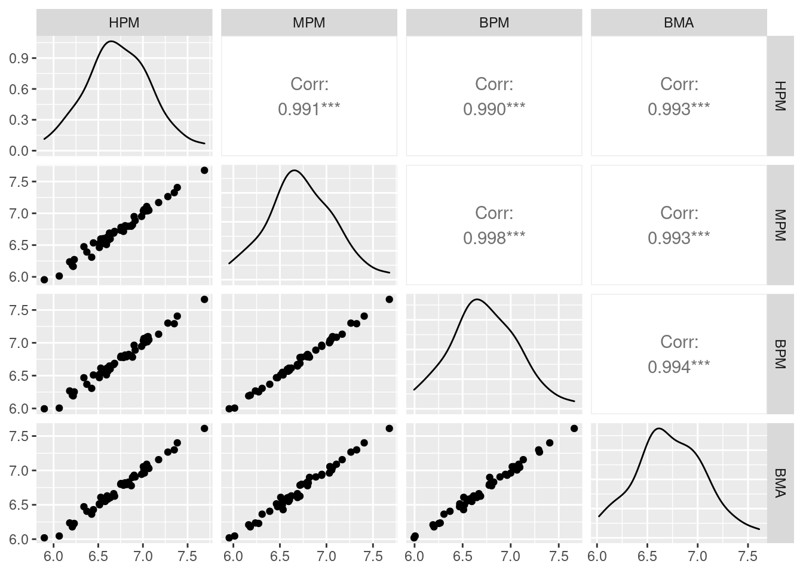
From the above paired correlation plots, we see that the correlations among them are extremely high. As expected, the single best predictive model (BPM) has the highest correlation with MPM, with a correlation of 0.998. However, the highest posterior model (HPM) and the Bayesian model averaging model (BMA) are nearly equally as good.
8.4.2 Prediction with New Data
Using the newdata option in the predict function, we can obtain prediction from a new data set. Here we pretend that UScrime is an another new data set, and we use BMA to obtain the prediction of new observations. Here we only show the results of the first 20 data points.
BMA.new = predict(crime.ZS, newdata = UScrime, estimator = "BMA",
se.fit = TRUE, nsim = 10000)
crime.conf.fit.new = confint(BMA.new, parm = "mean")
crime.conf.pred.new = confint(BMA.new, parm = "pred")
# Show the combined results compared to the fitted values in BPM
cbind(crime.BPM$fit, crime.conf.fit.new, crime.conf.pred.new)
## 2.5% 97.5% mean 2.5% 97.5% pred
## [1,] 6.668988 6.509404 6.809742 6.661770 6.266296 7.082696 6.661770
## [2,] 7.290854 7.138521 7.459119 7.298827 6.882797 7.714510 7.298827
## [3,] 6.202166 5.947993 6.390593 6.179308 5.732828 6.621424 6.179308
## [4,] 7.661307 7.377879 7.823049 7.610585 7.142319 8.023528 7.610585
## [5,] 7.015570 6.846536 7.254357 7.054238 6.620890 7.482864 7.054238
## [6,] 6.469547 6.299224 6.754411 6.514064 6.047853 6.945217 6.514064
## [7,] 6.776133 6.509156 7.070266 6.784846 6.288204 7.264761 6.784846
## [8,] 7.299560 7.045365 7.486718 7.266344 6.815580 7.695614 7.266344
## [9,] 6.614927 6.490210 6.790495 6.629448 6.213240 7.047878 6.629448
## [10,] 6.596912 6.467033 6.742498 6.601246 6.194664 7.010144 6.601246
## [11,] 7.032834 6.869012 7.233546 7.055003 6.639837 7.482562 7.055003
## [12,] 6.581822 6.423806 6.720489 6.570625 6.166095 6.987066 6.570625
## [13,] 6.467921 6.214343 6.719867 6.472327 5.997811 6.929763 6.472327
## [14,] 6.566239 6.392852 6.766882 6.582374 6.170024 7.023828 6.582374
## [15,] 6.550129 6.359634 6.752605 6.556880 6.106726 6.981504 6.556880
## [16,] 6.888592 6.740090 7.060124 6.905017 6.494080 7.330779 6.905017
## [17,] 6.252735 5.995756 6.472878 6.229073 5.791626 6.697323 6.229073
## [18,] 6.795764 6.548633 7.106520 6.809572 6.351876 7.290688 6.809572
## [19,] 6.945687 6.755553 7.133436 6.943294 6.499833 7.369250 6.943294
## [20,] 7.000331 6.776552 7.141022 6.961980 6.521480 7.385507 6.961980
## [...]8.5 Summary
In this chapter, we have introduced one of the common stochastic exploration methods, Markov Chain Monte Carlo, to explore the model space to obtain approximation of posterior probability of each model when the model space is too large for theoretical enumeration. We see that model selection is very sensitive to the prior distributions of coefficients. Therefore, besides the reference prior, we have also introduced the Zellner’s \(g\)-prior. To solve the paradoc problems, we have improved this Zellner’s \(g\)-prior by imposing relationship between the scalar \(g\) and the sample size \(n\), which leads to other priors, such as the unit information \(g\)-prior, the Zellner-Siow cauchy prior, and the hyper-\(g/n\) prior.
We later have demonstrated a multiple linear regression process using BAS package and the US crime data UScrime. We have diagnosed the results using the Zellner-Siow cauchy prior, and have tried to understand the importance of variables. Finally, we have compared the prediction results from different models, such as the ones from Bayesian model average (BMA), the highest probability model (HPM), the median probability model (MPM), and the best predictive model (BPM). For the comparison, we have used the Zellner-Siow cauchy prior. But of course there is not one single best prior that is the best overall. If you do have prior information about a variable, you should include it. If you expect that there should be many predictors related to the response variable \(Y\), but that each has a small effect, an alternate prior may be better. Also, think critically about whether model selection is important. If you believe that all the variables should be relevant but are worried about over fitting, there are alternative priors that will avoid putting probabilities on coefficients that are exactly zero and will still prevent over fitting by shrinkage of coefficients to prior means. Examples include the Bayesian lasso or Bayesian horseshoe.
There are other forms of model uncertainty that you may want to consider, such as linearity in the relationship between the predictors and the response, uncertainty about the presence of outliers, and uncertainty about the distribution of the response. These forms of uncertainty can be incorporated by expanding the models and priors similar to what we have covered here.
Multiple linear regression is one of the most widely used statistical methods, however, this is just the tip of the iceberg of what you can do with Bayesian methods.
Chaloner, Kathryn, and Rollin Brant. 1988. “A Bayesian Approach to Outlier Detection and Residual Analysis.” Biometrika 75 (4). Oxford University Press: 651–59.
Hoff, Peter D. 2009. A First Course in Bayesian Statistical Methods. Springer Science & Business Media.
Jeffreys, Sir Harold. 1961. Theory of Probability: 3rd Edition. Clarendon Press.
Kass, Robert E, and Adrian E Raftery. 1995. “Bayes Factors.” Journal of the American Statistical Association 90 (430). Taylor & Francis Group: 773–95.
Venables, William N, and Brian D Ripley. 2013. Modern Applied Statistics with S-Plus. Springer Science & Business Media.